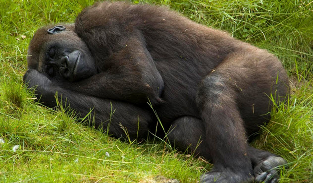
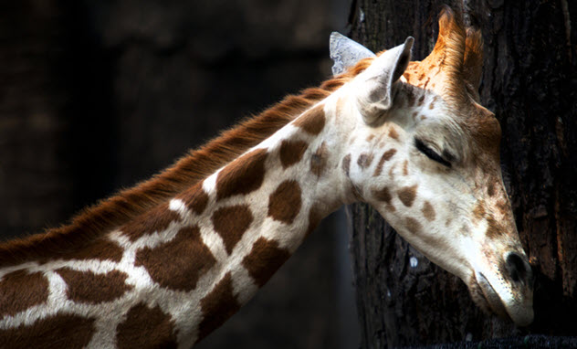
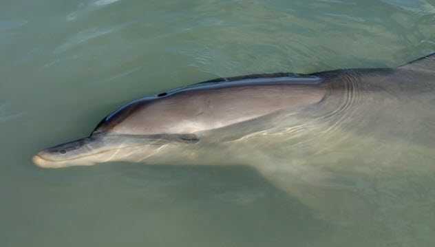
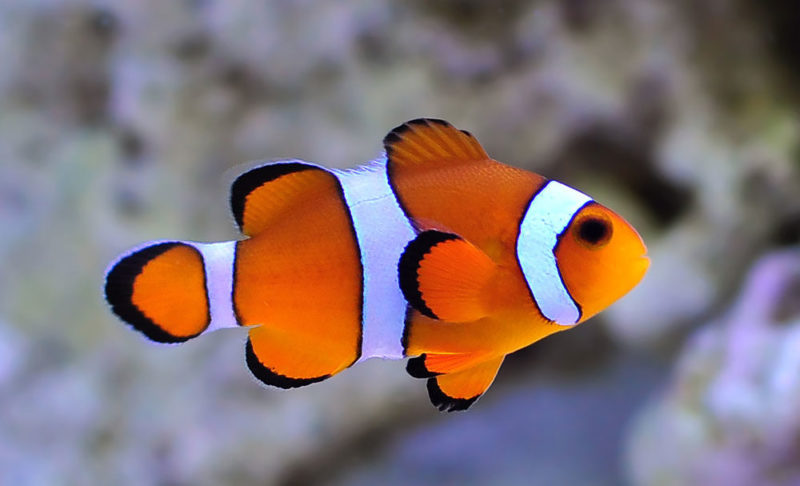
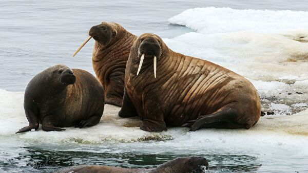

Человекоподобные приметы, такие как гориллы, орангутаны и шимпанзе, действительно спят почти как мы.
На ночь они устраивают себе что-то вроде постели из листьев, травы или прутиков и сворачиваются в этих
"гнездах" калачиком как люди в теплой постели.
Мелкие приматы, вроде мартышек или макак, спят иначе, они просто замирают сидя на ветке в более удобной позе,
шевелятся во сне и время от времени просыпаются, чтобы проверить, нет ли поблизости хищников.
Крупные копытные животные вроде слонов и жирафов чаще всего просто не могут найти
себе надежное укрытие для сна, поэтому вынуждены спать стоя, чтобы всегда быть готовыми к тому, чтобы вскочить и убежать от опасности.
У этих животных есть специальные мышечные "замки" в районе колен, чтобы им не пришлось во сне напрягать мышцы. Эти "замки" автоматически
заставляют ноги стоять прямо когда животное засыпает. Этот же механизм сна есть у лошадей, коров и даже у птиц.


Как и другие китообразные дельфины не могу спать в привычном понимании этого слова. Большинство морских
млекопитающих должны постоянно остерегаться хищников, а кроме того им надо всплывать на поверхность, чтобы дышать.
Если дельфин заснет как человек, он просто утонет. Кроме того дельфины теплокровные существа, которые чаще всего живут в прохладных водах,
поэтому им надо постоянно двигаться, чтобы у них не понизилась температура тела.
Поэтому эволюция придумала для дельфинов особый сон, когда засыпает лишь половина мозга.
Когда возле аквариума горят лампы, рыбы вообще не спят, а когда оставить аквариум в темноте, рыбы засыпают.
Дело в том, что свет высвобождает определенные гормоны, которые определяют потребность в сне.


Моржи могут легко не спать до 84 часов подряд, а потом сполна компенсировать этот урон. На суше морж в среднем спит
до 19 часов в сутки. В воде у моржей возникают определенные проблемы со сном, им приходится спать короткими отрывками и регулярно всплывать на поверхность для дыхания.
Но некоторые моржи нашли изящный выход - они высовывают голову из воды и поглубже вонзают свои большие бивни в кромку льда. И после этого спокойно засыпают. Тело моржа находится в воде, а голова снаружи.